← 返回阅读库 · 原论文目录
论文讲解阅读文档 · 多模态语言模型 · v025
LLaVA Visual Instruction Tuning[2304.08485]
视频时长 00:09:32；讲解文字 4,186 字符；提取讲解画面 17 张。按视频原顺序阅读，每段文字保留时间戳。
文字来自整段视频的自动语音转写，按自然停顿分段，并与 PPT / 论文页面 / 演示画面对齐。未将讲解压缩为摘要；术语、数字和口述公式请结合画面及原论文核对。 阅读稿已校正规范部分明确术语误识别；原始逐字稿和每处修改记录另行保留。
讲解画面为源视频截图（640×360），不是可编辑 PPT 文件。全片按每秒 2 帧扫描内容变化，逐步展开页保留；连续动画保留代表画面。清晰度受源视频限制。
下载完整资料包 · 含离线 HTML、PDF、Word、全部 PPT 画面和字幕。
原论文与材料
Visual Instruction Tuning · 下载完整 PDF（25 页）
按时间阅读
00:00:00–00:00:17 · 画面 001
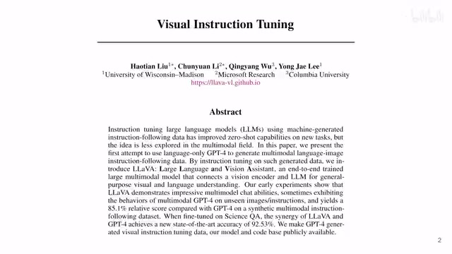
00:00:00–00:00:17 · 画面 001大家好啊，今天我们来快速水平论文 Visual Instruction Tuning。那么我们知道，人生的所有问题呢，无非就是三种解法：重启，事实不行就分多喝岩浆。那我们今天呢，就来看这个岩浆的部分，也就是这个 Large Language and Vision Assistant LLaVA。
00:00:17–00:01:43 · 画面 002
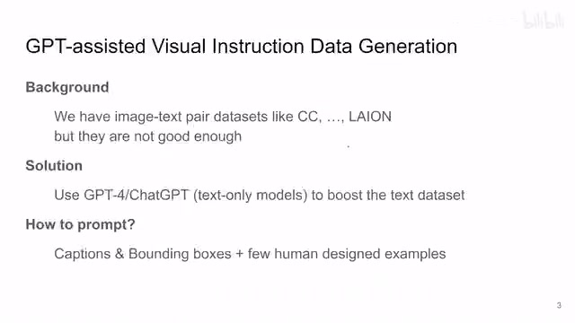
00:00:17–00:01:43 · 画面 002那么这一篇存在的背景呢，就是我们现在已经有很多这个图像和文字配对的这样的数据集，来可以帮助我们做一些很有意思的事情。那就比如说，你给一张图像，然后呢，你希望这个模型能根据这些图像来回答你问的一些问题，一个高级的 VQA。但是基于这些数据集建立的文本和图像它们之间的联系呢，还是相对比较浅层的。我们希望能更进一步的让模型去图像中挖掘更多详细的信息。而这种期望呢，基于我们现在有的数据集呢，是很难达成的。那么因此呢，本文就使用了现在已经有的相对成熟的这个大语言模型，虽然这些模型呢，它们被设计为只能处理纯文本。
当然，你通过各种 prompt 也可以使用各种工具，这都是另外的话题了。但是我们可以用这些已有的模型去强化我们这些数据集当中的文字的部分，主要是基于这些语言模型它内部存在的各种常识，相当于把我们语言模型里的各种信息灌注到这个 image text 这个数据集里面。那么通过这样一种方式呢，来取得一个好的数据集，帮我们去做更多的更详细的加油任务。那么具体这一篇呢，作者就是通过和图像相匹配的这个 caption，就是这个文本，还有这个图像中的各种 bounding box，我们等一下马上举几个例子你就明白了。那么通过人工的设计几个样本，让我们的语言模型呢，根据这样的几个样本来去不断的生成我们的数据集，最后呢来训练出一个自己的模型，我们直接来看它的设计啊。
00:01:43–00:01:44 · 画面 003
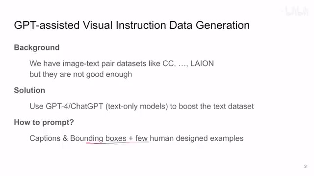
00:01:43–00:01:44 · 画面 00300:01:44–00:01:52 · 画面 004
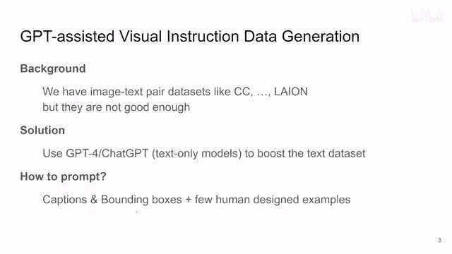
00:01:44–00:01:52 · 画面 00400:01:52–00:02:18 · 画面 005
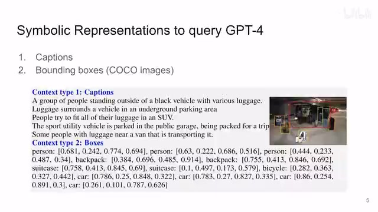
00:01:52–00:02:18 · 画面 005那正如我们之前说的，拿到一张图之后呢，我们提供的是和这个图相匹配的这个 caption。那同时呢，还有这个图中的各种 bounding box，也就是我们的这些物体的一个个小框框嘛。那么我们希望的语言模型通过这些信息为基础，来去扩充我们的数据集，来生成一些我们想要的数据格式。那么这些数据格式具体是什么样子的呢？那我们看到作者这里主要提了三种数据格式，那其实重点就是前两种，然后第三种呢是根据他来总结的。我们来看啊，首先第一种呢就是对话的形式。
00:02:18–00:03:29 · 画面 006
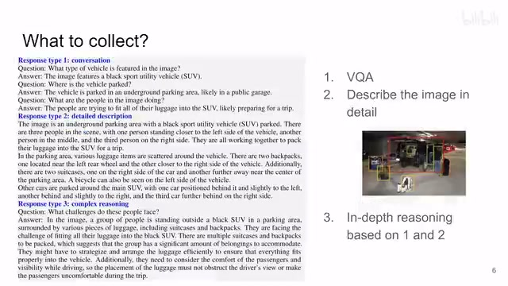
00:02:18–00:03:29 · 画面 006我需要我们的语言模型看到我的 caption，看到这些 bounding box 之后呢，能根据这些图像中已有的信息，能根据这个 caption 去生成一些对话。那么这些对话呢，就是一个一问一答的形式。那么第二类呢，就是更详细的描述，那么结合我们的 caption，结合我们图像中的 object 来生成一段更详细的对这个图像的总结，对这个图像的描述。
那么第三类问题呢，就是我们结合第一类问题和第二类问题，提出一些需要思考的问题。那比如说，你看到这张图里面，那么我们能看到的就是有很多东西，很多行李散落在车的周围，那这群人呢在努力的把这些行李装到这个 SUV 上。那么基于这样的信息呢，我们可以问一些稍微有一点更深层次的问题，就是那这些人现在遇到的困难，遇到的挑战是什么呢？那因为我们有很多行李在这里，然后看起来呢，这个车是装不下的样子。
那么这个就是第三类的问题。那么作者通过恰当的 prompt 让 GPT 帮我们生成这样的一串数据集。那这里我们来快速的看一下它的 prompt。那首先对于第二个任务好说，就是无非就是根据我们已有的信息 caption 还有 bounding box，把我们这个图像更加详细的给它描述出来，你可以用这些 prompt 来要求 GPT 去描述我们图像中的内容。那么对于第一个任务呢，这个相对就比较复杂，就是我们希望让 GPT 自己去生成一个对话的形式。
00:03:29–00:03:46 · 画面 007
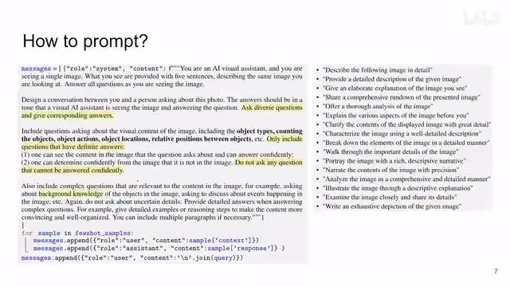
00:03:29–00:03:46 · 画面 00700:03:46–00:03:47 · 画面 008
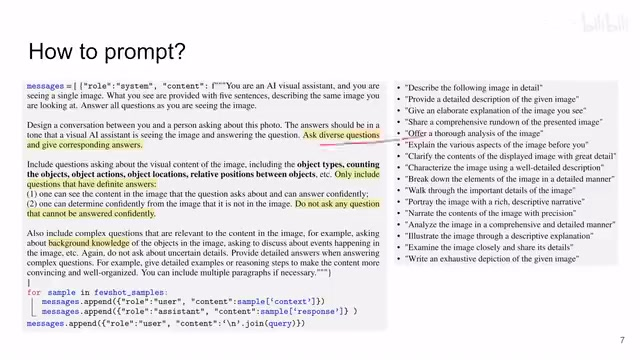
00:03:46–00:03:47 · 画面 00800:03:47–00:05:04 · 画面 009
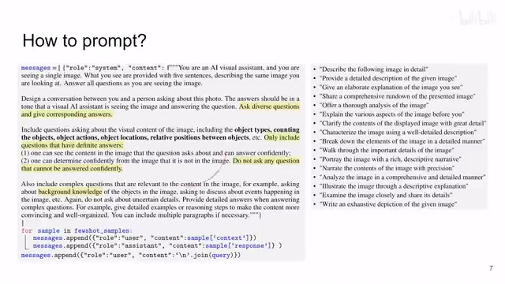
00:03:47–00:05:04 · 画面 009就是我的用户给一张图像，给一个问题，然后我们的 assistant 基于这个问题，基于一些所有的信息来去回答。注意这里我们看到这个 prompt 里面其实很有意思的就是我们的提问提的问题是要有水平的，我们来看到这里希望 GPT 问的问题。那首先他要 diverse 能结合图像中的各种的内容来去问这个问题，包括这里面有什么样的物体啊，有多少个物体啊，等等，等等，等等，这样的问题，多种多样的问题，高到不知道哪里去的问题，来实现一个这个谈笑风生的效果那么这是第一点，那么第二点呢，就是问来问去的问题呢，你得根据图像中已经有的内容确定，这是一个能回答的问题，再去提问他，不然人家只能说无可奉告，而你又不高兴，只要我们都尊重图像中同一个事实，就允许有不同的观点，就允许有不同的问题，我认为这个就是 high level
那么最后一点邀请呢，就是我们可以问一些相对复杂的问题，比如说根据图像中的物体去多问一些它的背景相关的知识啊等等，不要问来问去都是那么几个问题 Too youngToo simpleSometimes naive 还是要学习一个。那么最终呢，我们就让 GPT 把这个数据集给它生成了出来。那么这里有一个例子啊，我们提供给 GPT 的这个 caption，那比如说这里有一个电影院，然后在这个大门上面显示了个演出的时间。
00:05:04–00:05:44 · 画面 010
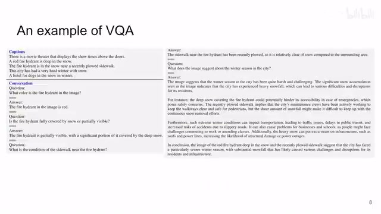
00:05:04–00:05:44 · 画面 010同时有一个红色的消防栓被埋在大雪里面，那么虽然这个消防栓在雪里，但是它旁边有一条刚被清理过的人行道，等等，这样的描述然后呢，你就根据这样的描述就去提问了，对吧，这个消防栓是什么颜色的，红色的，那么一直到最后呢，问一些更加抽象更加有深度的问题，比如我说我杀人不眨眼，你问我眼睛干不干啊，不对，那么这个图像显示的这个城市在冬天怎么样呢，那么答案是这是一个非常严酷的寒冬吧啦吧啦吧啦讲下去，那么这是一个典型的对话的例子
00:05:44–00:06:46 · 画面 011
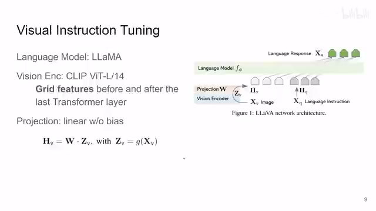
00:05:44–00:06:46 · 画面 011那么有了这样的数据集，我们就可以开始真正的去着手训练我们的模型了。那么这里我们看到它的模型其实非常简单，三个部分，首先有 language model，我们要真正的生成对话，这里作者用了 LLaMA，那么当然在它的网站上还适配了其他语言模型，你感兴趣的可以去看。那么在这里的这个 vision encoder 呢，只用了一个 clip 的 encoder，一个 vit based encoder。那注意呢，这里他不是把每张图像只提一个 token，而他里面用的呢是图像里面每一个 patch 的 feature。那么最后呢，就是一个 linear projection，他要把视觉的这些 token。
也就是这个 vision transformer 里面出来的这些 token 来给它投影到你的语言模型的这个 token，本质上也就是一个大的矩阵惩罚，就把这个投影做完了，那么这样子呢，你就把视觉的信息呢还有语言的文本呢就一起纳入到这个语言模型里面，就可以一起的去训练一起做处理了，那你可以对比一下之前介绍的 flamingo，它用 cross attention 去做这个视觉的这些东西，那本文呢就非常简化，一个投影呢就做过来了，本文的模型这个 visual instruction training 就是这么直接
00:06:46–00:07:28 · 画面 012
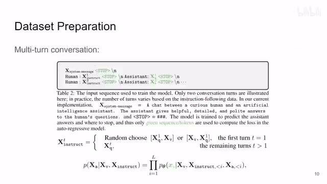
00:06:46–00:07:28 · 画面 012那么然后呢就是我们的数据集，那我们之前想要训练一个用户一问然后这个机器一答的这么一个形式，那么用户问的一开始呢他会给一张图片，然后让机器根据这个图像来回答嘛，那这个时候呢我们看到他的准备的数据集呢就是一开始他可能随机是你的问题在前面或者是你的图像在前面，这个都无所谓了，然后呢你的机器回答一句，用户再问下一个问题，你的机器再回答一句，注意这里呢这个模型只有在这个绿色的这个 token 上面他才会计算 loss，也就是我们只希望这个模型去预测 assistant 他会回答什么，每一句子从哪里停下，这是他的一个训练的小细节，那么这样子呢你拿上数据集拿上这个模型就可以开始训练了，那在训练的时候呢作者还有一个讲究就是它是一个分阶段的训练的过程
00:07:28–00:08:20 · 画面 013
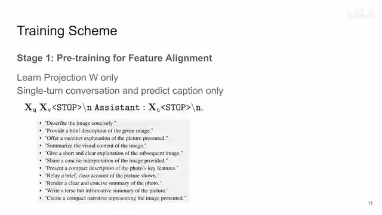
00:07:28–00:08:20 · 画面 013那么首先第一个阶段呢，他重点是训练那个 projection，也就是从视觉 token 投到文本 token 这么一个过程。那么这个时候呢，他用的数据跟我们之前说的不一样，他这里用了一个非常简单的数据，也就是单轮的这么一个对话的形式。而且呢，他希望预测的呢，是我们图像原本的这个 caption。那么他的每一条数据呢，是首先我们有这么一个问题的要求，这个 execute question 嘛，就是在下面这些问题里面去选。那么然后呢，就是你图像这些 token 结束。
然后你希望你的 assistant 呢去回答一个结果，这个结果呢是我们图像原本配的这个 caption。作者呢先用这样的数据集去 pretrain，这样子训练完了之后呢，你的这个 projection layer 它就能够相对有意义的把你视觉的 token 转到你的图像的 token 里面。那么这个呢是第一步叫做 pretraining for feature alignment，那么第二步呢就开始正式的训练了，叫做 fine-tuning end-to-end。
00:08:20–00:08:51 · 画面 014
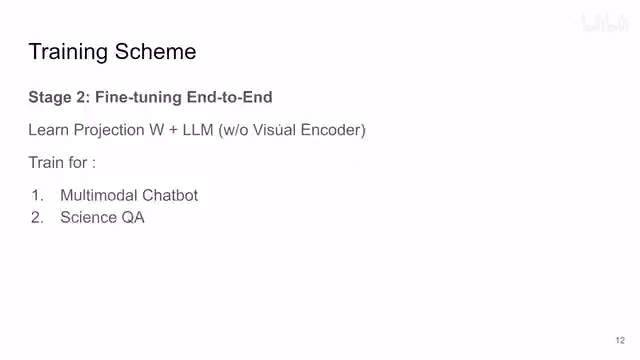
00:08:20–00:08:51 · 画面 014那这个时候呢，你把这个 W 加上你的 language model 一起去训练，你只保留 Vision Encoder 不动就可以了。然后呢，你就去针对你特定的任务，你就用上我们之前准备好的数据集来训练好了。那这里呢，作者测试了两类不同的任务。一个是 multi-modality chatbot也就是你给一张图片。然后和他去聊这个图片里面的东西。
然后呢再是这个 science question and answer它的本质上也是差不多的东西。那么这样子呢，经过一系列的训练呢。我们得到了这样的结果。
00:08:51–00:09:11 · 画面 015
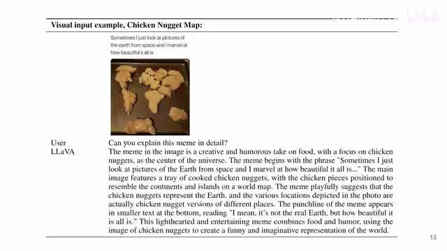
00:08:51–00:09:11 · 画面 015对吧，你看到这张非常经典的这个图。这个模型呢，可以给你解释清楚。这个图他为什么乐。那么更多详细的实验呢。感兴趣的朋友呢非常推荐你去看他原始的论文。非常推荐你去看他原始的代码。他的代码也是很不错的。那么这个呢，是这一篇。那么同样的这一组人呢。
00:09:11–00:09:32 · 画面 016
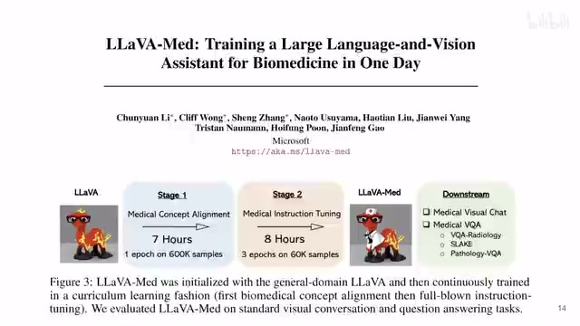
00:09:11–00:09:32 · 画面 016根据现在已经有了这个 LLaVA 的工作呢他们又继续做了这个 LLaVA-Med也就是拿上这些 CT、X 光这些图像去做 medical image 的东西有这个相关需要的朋友呢。你可以去 follow 他这个 work好的，那么以上就是我对这篇文章的一个快速的整理。那么感谢您的收看。再见大家记得多喝盐浆。
00:09:32–00:09:32 · 画面 017
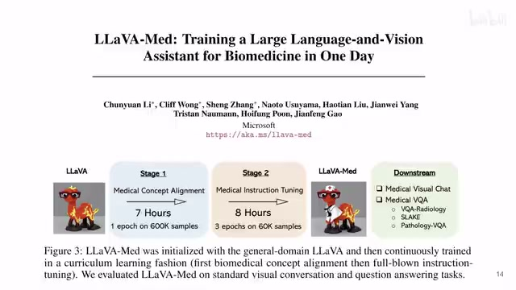
00:09:32–00:09:32 · 画面 017转写与来源说明 · 1 个自动复核提示
保留 53 个原始语音片段，1 个片段触发自动复核提示。提示仅用于定位可能的术语、重复或识别问题，不等于已确认错误。
讲解画面为源视频截图（640×360），不是可编辑 PPT 文件。全片按每秒 2 帧扫描内容变化，逐步展开页保留；连续动画保留代表画面。清晰度受源视频限制。
原视频：paper/合集_2026-10-16_多模态语言模型/[论文简析]LLaVA Visual Instruction Tuning[2304.08485].mp4
SHA-256：8457039982cb380ed7ee6caf97996dd32477be6efd5c827bb7f0487390cf647c
一个是 multi-modality chatbot
全文按视频语音与画面制作。原论文可从上方链接下载；完整资料包保留全文、原始逐字稿、字幕和校对记录。